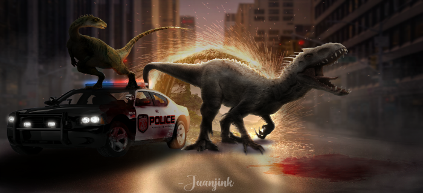
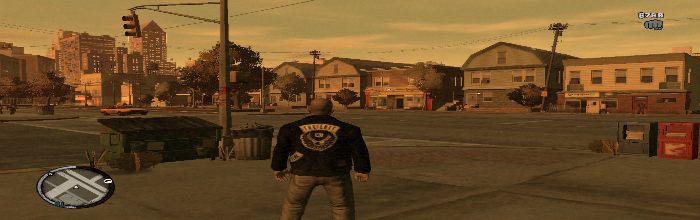

Maragaku Channel's Website
Kalimantan Barat Pontianak

About Maragaku Channel
April 7, 2022
Maragaku Channel's Website merupakan website resmi untuk saluran youtube dari saya sendiri yang mana dalam website ini saya akan memberikan berbagai macam hasil karya dan kegiatan saya sehari-hari.

Program modding
Kalimantan Barat, Pontianak, April 20, 2022
Alat untuk modifikasi anda dapat menggunakan 3DS max, Sketchup, Zmodeler, juga Colleditor sebagai alat atau software utama dalam kegiatan ini.
The main content
Website ini menyajikan konten menarik terkait desain, game, modding, serta aktivitas lainnya.
Popular Posts
-
 Tutorial modding game
Tutorial modding game
Grand theft auto san andreas -
 Desain manipulation Photoshop
Desain manipulation Photoshop
PC/Android -
 Konten YouTube
Konten YouTube
Tutorial dan modifikasi